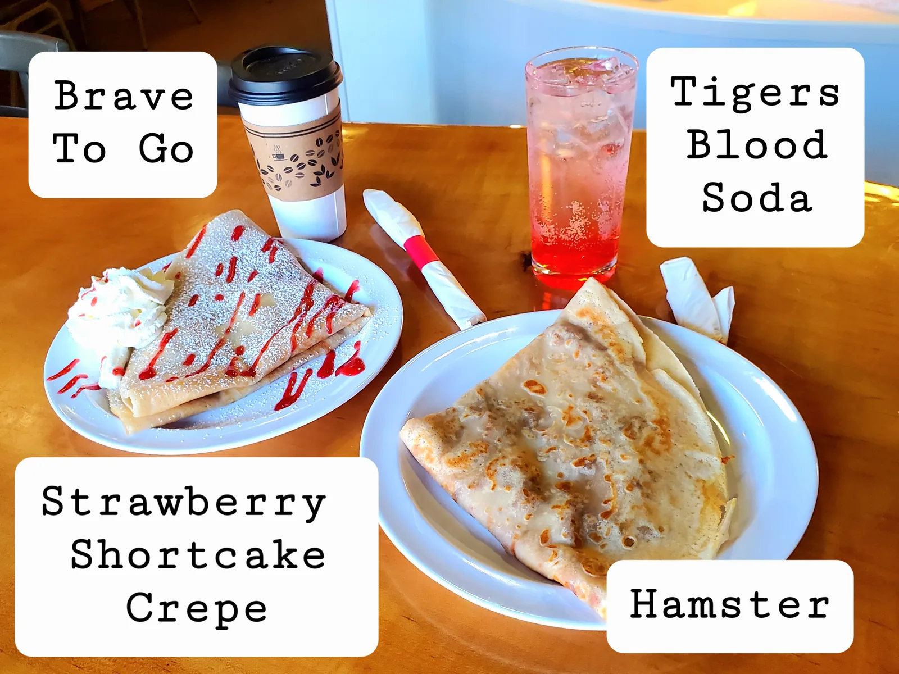
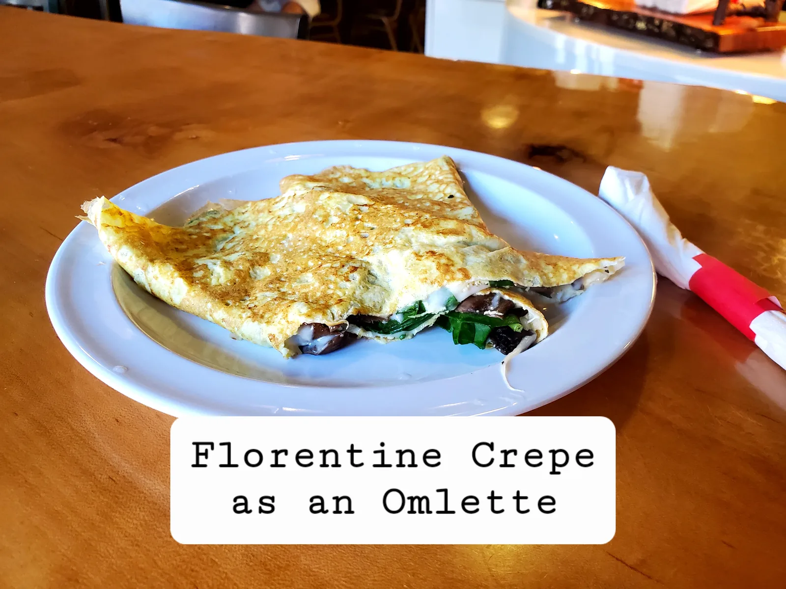
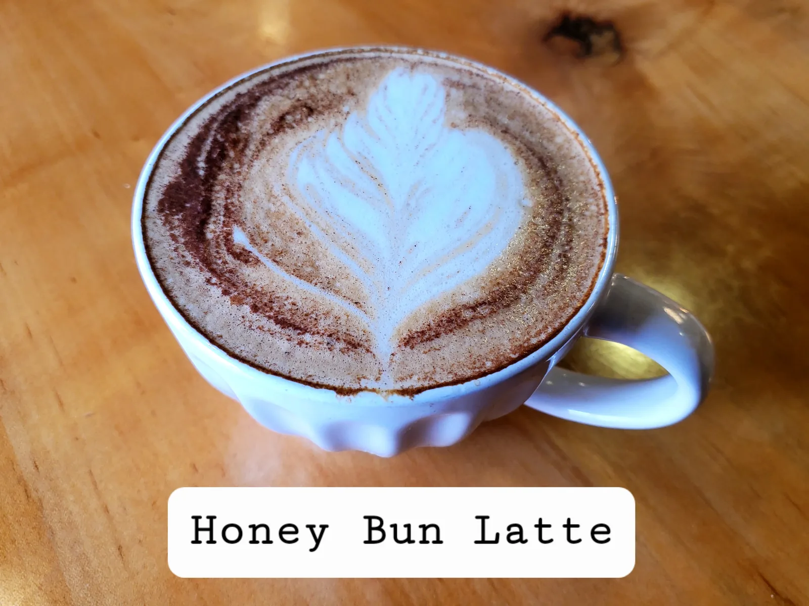
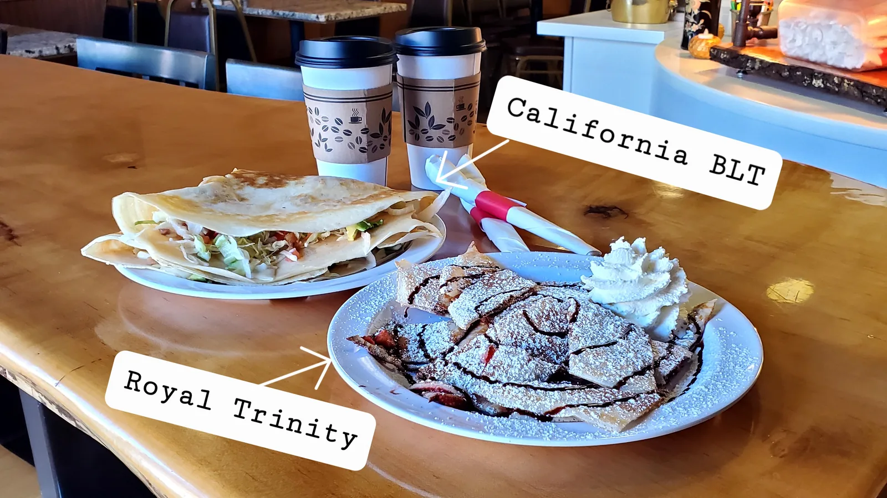
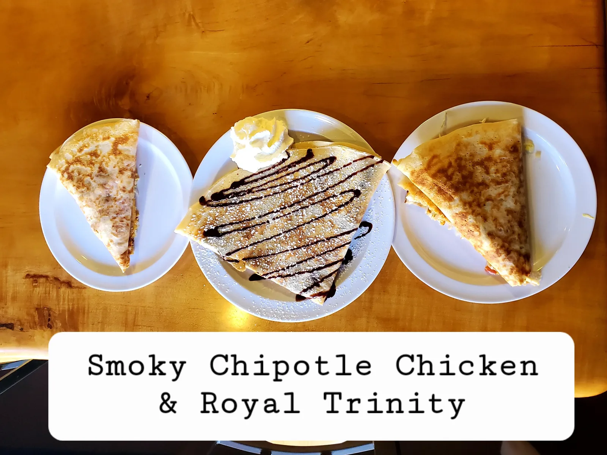
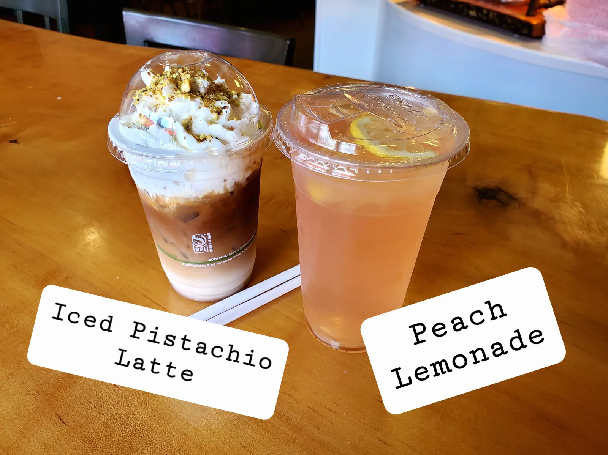

What We Offer
A family-owned cafe serving sweet and savory crepes, locally roasted Charlotte coffee, and loose-leaf teas in Downtown Matthews.
Sweet & Savory Crepes
A wide selection of sweet and savory crepes, with gluten-free and vegan options available to suit your preferences.
Locally Roasted Coffee
Specialty coffees roasted locally in Charlotte, served as espresso drinks, hot drip coffee, and iced beverages.
Loose-Leaf Teas
A variety of loose-leaf green, black, and herbal teas steeped hot or iced for a comforting drink.
Crepes, Coffee & Color
A taste of the sweet, savory, and refreshing favorites available at Royal Cafe & Creperie.






Order Online for Quick Counter Pickup
Our full operational menu, daily availability, and current pricing are maintained in our online ordering system. Place your order online for fast counter pickup.
Simple & Approachable
Whether you are stopping by on your morning walk or picking up lunch for the office, we make it easy to order your favorite crepes, coffees, and teas.
- Sweet and savory options
- Gluten-free & vegan options available
- Coffee roasted locally in Charlotte
- Fast counter pickup in Downtown Matthews
A Neighborhood Gathering Place
Royal Cafe & Creperie is a family-owned cafe in historic Downtown Matthews. Client materials identify Alexis and Elena as the founding mother-and-daughter team, with Alexis Mizrahi-Botero listed as the owner/operator.
The cafe serves sweet and savory crepes, locally roasted Charlotte coffee, and loose-leaf teas.
Read Our StoryVisit the Cafe
Downtown Matthews, NC 28105
Latest on Instagram
See the cafe's latest specials, drinks, and daily updates from @royalcrepes.